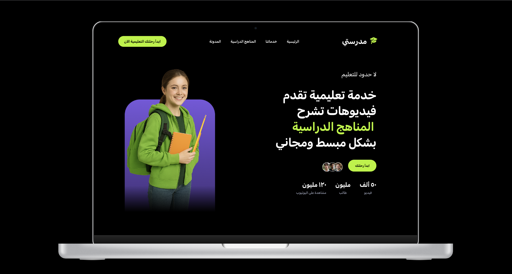

أبرز المشاريع
نظام إدارة وكالات التقنية "Core X"
🔴 المشكلة: افتقار الوكالات التقنية إلى أنظمة إدارة محتوى مخصصة ومرنة تلبي احتياجاتها التسويقية المتسارعة وتفتقر إلى المركزية.
💡 الحل: هندسة وتطوير نظام (Full-Stack) متكامل، مزود بلوحة تحكم ديناميكية آمنة لإدارة البيانات بسلاسة، وواجهة مستخدم عصرية تعزز التفاعل.
🚀 النتيجة: تحسين الكفاءة التشغيلية، تسريع عمليات تحديث المحتوى، وتقديم تجربة رقمية احترافية ترفع من معدلات التحويل وثقة العملاء.

مؤسسة الأفق للخدمات العقارية
🔴 المشكلة: حاجة المؤسسة إلى حضور رقمي يعكس القيمة العالية للعقارات الفاخرة ويستقطب شريحة العملاء ذوي الملاءة المالية العالية (VIP).
💡 الحل: تصميم وتطوير واجهة مستخدم تفاعلية فاخرة تعتمد على مبادئ الـ (Luxury UI/UX)، مع تركيز مكثف على تجربة التصفح السلسة والأداء الفائق.
🚀 النتيجة: ترسيخ الهوية الفاخرة للمؤسسة، زيادة ملحوظة في معدلات البقاء على الموقع، وتوليد عملاء محتملين ذوي جودة أعلى.

موقع أكاديمية الكرة الراقية
🔴 المشكلة: ضعف التواجد الرقمي للأكاديمية وحاجتها الماسة لمنصة احترافية تبرز برامجها التدريبية وتسهل عمليات التسجيل.
💡 الحل: بناء صفحة هبوط ديناميكية (Landing Page) باستخدام Tailwind CSS، تركز على التحويل السريع (CRO) وتوفر تجربة مستخدم حيوية ورياضية.
🚀 النتيجة: إطلاق ناجح للمنصة الرقمية، تسريع عملية استقطاب المشتركين الجدد، وتعزيز الصورة الاحترافية للأكاديمية في السوق الرياضي.

تطبيق منصة "مدرسي"
🔴 المشكلة: تعقيد تجربة الاستخدام في المنصات التعليمية التقليدية، مما يؤدي إلى تشتت الطلاب وانخفاض معدلات التفاعل.
💡 الحل: صياغة وتصميم واجهات مستخدم (UI/UX) مبتكرة ومبسطة عبر Figma، تستند إلى أبحاث سلوك المستخدم لضمان تجربة تعليمية ممتعة وسهلة.
🚀 النتيجة: تقديم نموذج أولي (Prototype) قابل للاختبار، يمتاز بتدفق سلس للبيانات، مما يمهد الطريق لعملية تطوير برمجية خالية من التعقيدات.
